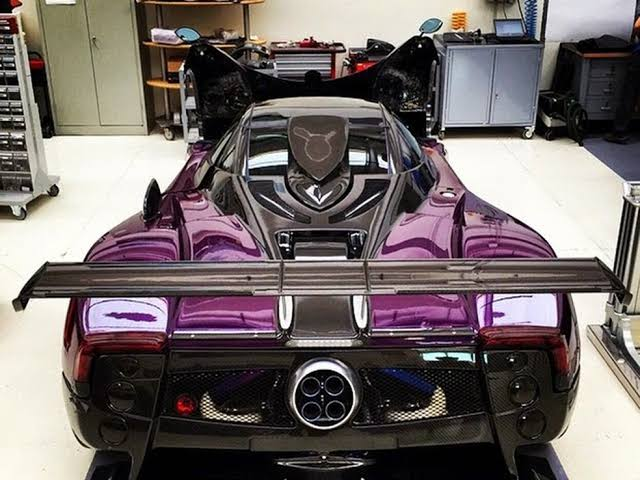
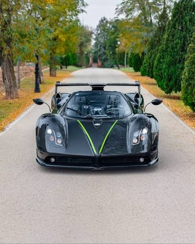

A criação do Pagani Zonda está diretamente ligada ao sonho de seu fundador, Horacio Pagani, de construir um supercarro que unisse engenharia de ponta, arte e exclusividade. Horacio Pagani nasceu na Argentina e, desde jovem, era apaixonado por automóveis. Inspirado por Leonardo da Vinci, ele adotou a filosofia de que arte e ciência caminham juntas. Essa ideia se tornou a base de todos os carros da marca.No início dos anos 1980, Pagani mudou-se para a Itália para trabalhar com fabricantes de carros esportivos. Ele conseguiu uma vaga na Lamborghini, onde participou do desenvolvimento de modelos e se especializou em materiais compostos, especialmente fibra de carbono.
Durante seu período na Lamborghini, Horacio acreditava que a fibra de carbono seria o futuro dos carros de alto desempenho. Na época, muitos consideravam o material caro demais para uso em larga escala. Como suas ideias não receberam o investimento que ele esperava, ele deixou a empresa e fundou sua própria fabricante de componentes de fibra de carbono. Pouco tempo depois, criou a Pagani Automobili em 1992. Seu objetivo era simples, mas extremamente ambicioso: construir o melhor supercarro do mundo.
O projeto começou no início dos anos 1990 e era conhecido internamente como C8 Project. Inicialmente, Horacio pretendia batizar o carro de Fangio F1, em homenagem ao lendário piloto argentino Juan Manuel Fangio, que era amigo pessoal de Pagani e ajudou a aproximá-lo da Mercedes-Benz para obter motores V12 da divisão esportiva Mercedes-AMG. Após a morte de Fangio, em 1995, Pagani decidiu não usar seu nome e escolheu Zonda, inspirado em um vento quente e seco que sopra na região dos Andes, na Argentina.
O Pagani Zonda foi apresentado ao público em 1999, durante o Salão de Genebra. Ele chamou atenção por diversos motivos:
O Zonda não foi criado apenas para ser rápido. Horacio Pagani queria que ele fosse uma obra de arte mecânica. Algumas características marcantes incluem:
Mesmo após o lançamento de seu sucessor, o Pagani Huayra em 2011, a demanda pelo Zonda continuou tão alta que a Pagani produziu diversas edições especiais sob encomenda por muitos anos.



Some quick example text to build on the card title and make up the bulk of the card’s content.
Go somewhere